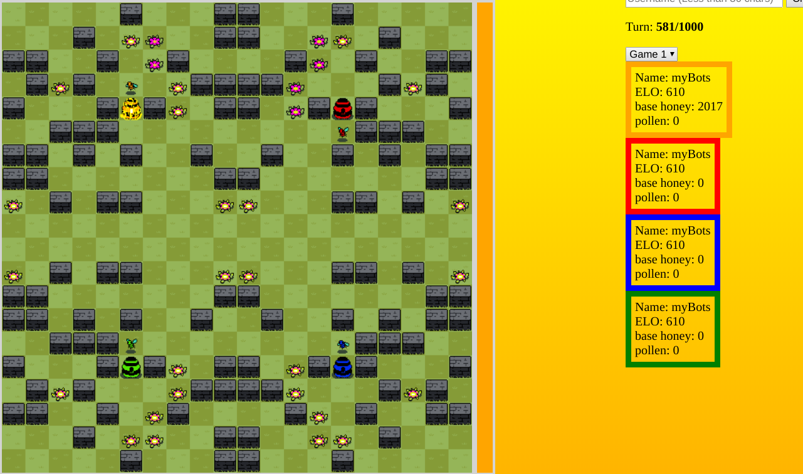
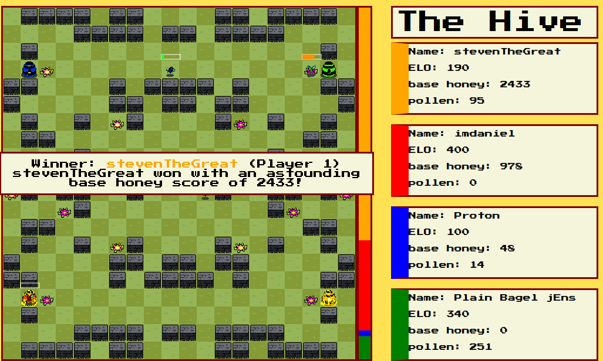
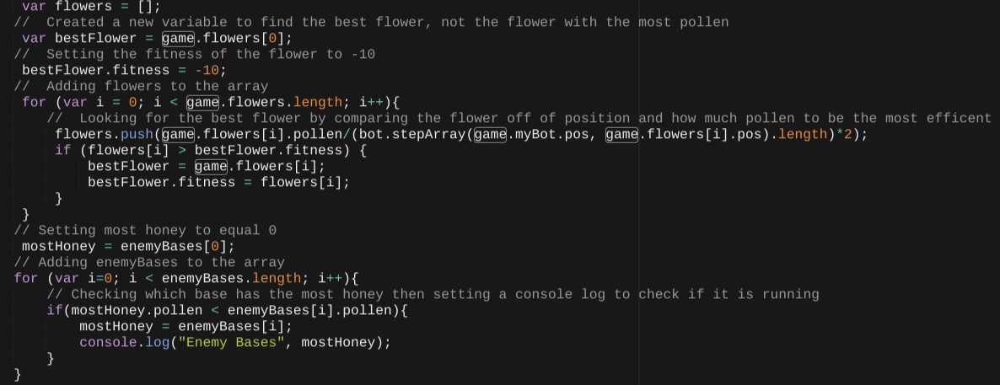
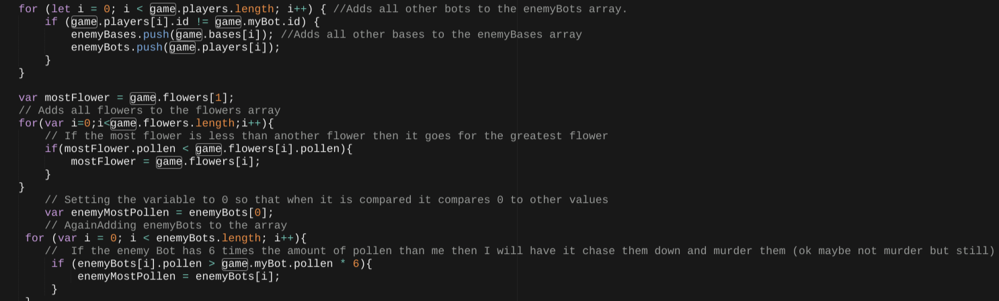
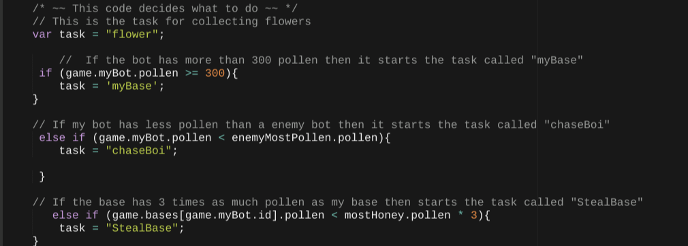
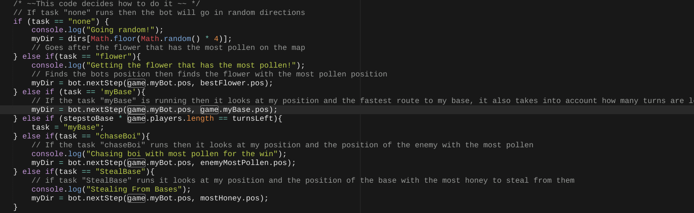

You have to bee kidding me! How do you not know what Hive is? Hive is a bee type of simulator game where you program your bot to try and win by collecting pollen, returning it to base, stealing from others or do other various tasks that you can think of and create. Some people chose to even have their bees do other various tasks to try to help them win. Others made their bots look at other bot's position to then figure out how far away they are and then run away or go towards them so they could either steal or run from their opponets to win.
I decided that I wanted my bot to do 4 basic tasks. These tasks were : Collect pollen, return to base, Chase down opponets that had a lot of pollen, and Steal pollen from Bases. I chose these tasks because they were simple but very effective and allowed me to get up to 8th place on the leaderboard. I was able to limit how much of a task I wanted to make occur more often by using math so that my bot wouldn't chase more than collect or collect more than returning to base. Using this method of trial by error then editing my code changing the math or adding a task allowed me to get very far up on the leaderboard and helped me win a couple games.
In this code, I used variables to define different things that were important and used throughout my code. The first 2 things I defined were enemyBots and enemyBases. I added them to an array so that I could later find out a lot of information such as thier position, how much pollen they had, etc. without having to code as much as I would have to if I used a variable. If I had used variables I would have had to add the variable for position of base, value of the base, and a lot of other stuff that would have just taken way too long. Later after adding everything I needed to as arrays I created a variable for mostHoney which allowed me to look at which base had the most honey so I could later steal from them. I used a variable here because I was only looking for the most honey and not multiple bases with the most honey since there would only be one base that has the most honey at one point.
After I added arrays and variables I needed to use them to allow my bot to find position or pollen. Again I added flowers to an array since there were multiple of them and it was just easier to have an array vs a variable, next I set the flower value to 0 so that when my bot compares the flowers it compares them to 0 first then the next flower. Next I set the fitness of the best flower to -10 so that my bot would find the flower that was more fit than -10. Next I create a for loop so that even after it loops through the loop once, it continues to run throughout the game allowing my bot to always be doing something. Inside my for loop I have my flowers get pushed, this allows the a lower flower to be pushed out of the way for a higher valued flower until there is only one highest valued flower. Next I have my bot divide the steps to take to the flower by the value, if the best flower is across the map but the second highest flower is right next to me, I would rather go to a slightly less valued flower than go across the map to get the highest flower and save a lot of time. Next I multiplied it by 2 because I found that was the most efficent way of finding the best flower, at first I tried multiplying it by 1.7 but found there were better flowers in the game that were closer, so multiplpying by 2 just made more sense and made my bot even more efficent.
Here are some other of my for loops that I used inside my bot. My last for loop was very difficult to make because I personally didn't want my bot to chase around that much and mostly focus on stealing and collecting pollen. The way I was able to make my bot do this was comparing enemy bots pollen to my pollen. If their pollen was 6 times as much as mine then I would chase them down. This strategy allowed me to chase down bees at the start of the game quickly and steal half of their pollen while also focusing on getting a lot of pollen myself without having to take time to chase down their bees since each bee is the same speed.
After I crated the for loops I have to set it to actually figure out when to do the tasks. I chose very specific names for my tasks so that I wouldn't get confused which tasks did what. My first task was collecting pollen from flowers. This was very simple because I just had to define what task flowers was. The next 3 were more complex and took more problem solving because they often broke or I changed them to make them the most efficent possible. My first task I set up was going back to base. I decided that I wanted my bot to go back to the base only if the bot had more than 300 pollen. I chose 300 because I wanted my bot to not collect to much so it wouldn't be chased down but not too little where it was inefficient. The next task I set up was the chasing bot task. I did this task by seeing if myBots pollen was less than the enemyBots pollen, however as I showed earlier in my for loop, the bot had to have 6 times the amount of pollen I did for it to actually chase down another bot with a lot of pollen.
Finally, this is my else if chain that actually allows my bot to function. This chain tells the bot what to do if a certain task is running. My first task was a task that randomly makes my bee go around in random directions and do almost nothing. This was never used in my program but I kept it just in case there was a game that some pieces of code didn't work and I didn't want my bee to just stay in one place, I would rather have it going in random directions than staying still and doing literally nothing. My next else if allows my bot to collect flowers. The collecting flowers task determines it's next step based off of my bots position and the next best flowers position. Again, the bot finds the best flower based off of position and value using the arrays I talked about earlier (Screenshot 3). This task was used a lot by my bot which is exactly what I wanted, chasing down enemies was not very efficent and stealing from others is very dangerous which is why I chose to change the math on a lot of my tasks since this was the best one in my opinion. Also, my other tasks did the samething where they looked at data or values then determined if the math was true to then run the tasks. This is how I stole from enemy bases and chased down other bees. All of these tasks looked at position, and then the value to then do the task I programmed my bot to do.
For this project I was very happy with my bot, I have never programmed anything involving AI which made me very nervous but also excited for this project. During the project there were a lot of roadblocks such as not getting my bot to run properly or not being able to join the full game against other actual bots and not just my own. But after the roadblocks I am super happy with my bot and am very pleased with the work I have done.
I think for this project I did very well considering the challenges and what I acomplished by myself and with the help of very excellent and smart peers I am quite happy that I made it in the top 10 on the leaderboard, I fully expected like top 20 not 10 which I am very stoked about. I wish I had more time because as you can see above I had a lot of ideas to add, but I couldn't with the amount of time and my progamming ability. In all, I am very pleased with what I accomplished and am very grateful for those who helped me and explaining how to do things that I wanted to do.